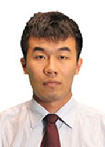

立志从教，走在教育人生的路上
李阳，男，23岁，中共党员，国家首届公费师范生，东北师范大学2007级化学学院化学专业学生。他是立志从教、全面发展的典范。学习期间获得第三届中国师范大学东芝杯理科师范生教学技能创新大赛化学组一等奖；多次获得东北师范大学一等奖学金、教师技能奖学金、社会实践奖学金、优秀学生干部奖学金、五四优秀团员等诸多荣誉。曾任校学生会生活部部长、校大学生科研实践中心主任、化学学院学生会主席等职务。去年11月，经过多轮紧张的角逐，李阳最终签约深圳实验学校。四年磨一剑，他即将正式走上讲台，践行四年前当一名教师的承诺。
曾经有人问李阳为什么选择教师这个又苦又累的职业，他当时只是笑了没有说话。没人知道在李阳的求学生涯中有这样一位教师，在他迷惑时为他指点迷津，在他失落时为他拨开乌云，这个人既是学习上的老师，也是生活中的朋友。就是因为遇到了这样的好老师，李阳也决心要成为一名在学习上是学生榜样，在生活中是学生朋友的老师。还记得央视的《艺术人生》栏目，艺术家们每每谈及自己的艺术经历时，大多把艺术作为一种人生来体验，来创造，来生活，而且每每回首往事的时候，大多感慨万千，热泪盈眶。李阳认为每一位教师都应该有自己的教育人生，不把教育仅仅作为一个职业、一个手段、一项工作、一件事情来看待，而是当做自己的人生来对待，来体验，来充实，来完善。正是由于这些原因，他在2007年高考前夕，在国家出台公费师范生政策后，更加坚定了立志从教的决心。为了实现理想，李阳选择了人民教师的摇篮——东北师范大学。
大学伊始，作为首届公费师范生，学校组织开展了观看《冯志远》、参观校史馆、优秀校友报告会等多场入学教育活动。看到那么多的优秀校友，自豪的同时也倍感压力，李阳不禁问自己：“要想成为他们那样的优秀教师，我的大学该如何度过呢？”讲台上下，只有一步。但是要完成从学生到教师的角色转变，却需要付出很多努力。
一位老师曾经教导他：“要给学生一杯水，自己就要有一桶水，甚至是一条河 ，教师需要不断学习积累才能跟上教学发展的要求。”为了积累丰富的专业知识，开拓视野，李阳始终保持高中时代晚睡早起的生活习惯，以便为自己赢得更多学习时间。当别的同学在寝室悠闲自得地打游戏，躺在床上看小说时，他却把这些宝贵的课余时间花在学习上。五颜六色地标注着疑问的课本，写满答案的早已磨破的练习册，背诵单词时贴满墙壁的便签纸，白天充电只为了挑灯夜战的台灯共同记载了他刻苦学习的大学生活；大声朗读、奋笔疾书抑或是伏案小憩记录着李阳的点点滴滴。他曾说：“尽管每天躺在床上的时候很累，但是我却很开心，很踏实，因为我没有浪费我的大学，也没有浪费我的青春。”正是因为这样日复一日，年复一年的学习使得李阳有了扎实的专业知识和教育理论，曾多次获得校一等奖学金，还让他能够比较顺利地签约深圳实验中学。
生活并没有因为李阳的专业知识学得好，而让他的教师技能比别人有更大的优势。还记得有一次模拟课堂比赛中，当李阳沉浸于自己先进的教学理念和精彩的教学设计时，评委的一句话刺痛了他：“没声音，再好的戏都出不来，你把自己封闭在自己的世界中了”。他的第一次讲课就这样结束了。那天晚上，他在日记本上写下：“自己从小内向，不爱说话，上台就会脸红，语无伦次。但是俞敏洪都能从一个口语被嘲笑的人成为优秀英语教师，我想我也能，我要勇敢地走上台前。”那段时间恰逢学院教师技能大赛主持人选拔，为了抓住机会，李阳专门到图书馆学习主持方面的书，又在网上反复观看朱军主持的节目，默默地做准备，最终在选拔当天脱颖而出。这与天赋无关，没有人知道这是他第一次尝试走到人前说话、也没有人知道他已经为此练习了很久。俗话说：“手里有粮，心中不慌”。为了开个好头，他两天连夜没有合眼，对主持人的穿着、走位、语言、手势、串词等进行了详细的学习。最后的比赛中，虽然现场还是出现紧张到忘词，但是李阳的疯狂执着和整体表现还是得到了大家的认可。
后来经过老师的推荐，李阳加入了学院学生会，在学习之余带他走进“第二课堂”。从志愿者开始，他参与了学生会的众多活动，从教师技能大赛、寝室风采大赛到趣闻运动会、校园健康跑，全方位地锻炼了他的组织策划、沟通协调、主持驾驭能力，便于以后教育教学工作的开展。经过几年的锻炼，如今的他已经能够自如应对台前幕后的各项工作，灵活应对。丰富多彩的活动不仅使李阳得到了锻炼，为以后的教师工作打下基础，还能在课余时间为同学们做好服务、送去欢乐。难以忘记老师同学的理解支持、办公室的彻夜筹备、活动现场的东奔西跑、圆满落幕的成功喜悦。一个事业、一群朋友、一段回忆让他们共同成长。
筹备活动、业务学习，不仅让我具备了教学需要的多项能力，更重要的是思想上的成长。作为一名党员、学生干部、公费师范生，享受着国家和学校的特殊关怀，李阳希望能够把这种关怀传递下去，把内心深处的感恩之情化为回报社会的实际行动，早日走上讲台，完成国家赋予的使命。在每次的失败和成功中，他不断进步，先后担任学院学生会主席、校科研实践中心主任、校学生会生活部部长等职务，为了教师的梦想，他不断历练着自己，时刻准备着。
经过三年多的筹备，李阳的各方面能力都有所提升，临近毕业，他也迫切想检验下自己是否能够胜任以后的教学工作，查漏补缺。所以当第三届东芝杯中国师范大学理科师范生教学技能创新大赛来临的时候，李阳经过慎重考虑，准备参赛。他始终秉承这样一种信念：以后我要当一辈子老师，教师技能这关我必须要过！所以这次比赛他给自己确定的目标是：只许成功，不许失败！“凡事预则立，不预则废”，李阳在赛前四个月就制定了详细的准备方案。他觉得自己在教育教学理论方面还有所不足，便虚心请教各位老师，经常就某个问题探讨到深夜；觉得自己经验不够，就借来之前比赛的全部视频资料，反复看了十几遍，抓住课堂中的每一个细节。为了能在课堂设计方面有所创新和突破，他阅读了大量的国内外文献，并将相关课程内容“合成氨”方面的全部教学资料进行了整理；为了能够在即兴演讲中有出色发挥，他阅读了几十本化学学科教学专家的著作，并对其中的重点内容进行背诵，对于所讲的课，更是强化训练不下上百遍。八月酷暑，当别的学生在家中享受假期的时候，李阳却独自坐在闷热的寝室里看文献、改教案，经常进行到凌晨一两点。支撑他的，就是对教师职业的坚定和热爱！功夫不负苦心人，经过层层选拔，最终李阳在化学组决赛中取得了第一名的好成绩。赛后的李阳身体几乎接近透支，但他坚定地说：“我知道，自己离当初的教师梦又近了一步！”
不知不觉，李阳已经进入了离校倒计时。四年前的声音依然清晰，成为优秀教师、教育家，扎根基础教育一辈子是他一生不变的承诺。李阳希望，多少年以后当自己再来回忆自己的教育往事时，也能热泪盈眶。因为只有达到这种状态，才能反映教育已经进入了他的人生之中，才能是一种“教育人生”的状态。四年修炼，丰富了他的学识，开拓了他的眼界，锻炼了他的技能。李阳坚信：自己定会继续保持这种状态，勤奋创新，为人师表，用自己的一生去诠释充满爱的“教育人生”。
大学伊始，作为首届公费师范生，学校组织开展了观看《冯志远》、参观校史馆、优秀校友报告会等多场入学教育活动。看到那么多的优秀校友，自豪的同时也倍感压力，李阳不禁问自己：“要想成为他们那样的优秀教师，我的大学该如何度过呢？”讲台上下，只有一步。但是要完成从学生到教师的角色转变，却需要付出很多努力。
一位老师曾经教导他：“要给学生一杯水，自己就要有一桶水，甚至是一条河 ，教师需要不断学习积累才能跟上教学发展的要求。”为了积累丰富的专业知识，开拓视野，李阳始终保持高中时代晚睡早起的生活习惯，以便为自己赢得更多学习时间。当别的同学在寝室悠闲自得地打游戏，躺在床上看小说时，他却把这些宝贵的课余时间花在学习上。五颜六色地标注着疑问的课本，写满答案的早已磨破的练习册，背诵单词时贴满墙壁的便签纸，白天充电只为了挑灯夜战的台灯共同记载了他刻苦学习的大学生活；大声朗读、奋笔疾书抑或是伏案小憩记录着李阳的点点滴滴。他曾说：“尽管每天躺在床上的时候很累，但是我却很开心，很踏实，因为我没有浪费我的大学，也没有浪费我的青春。”正是因为这样日复一日，年复一年的学习使得李阳有了扎实的专业知识和教育理论，曾多次获得校一等奖学金，还让他能够比较顺利地签约深圳实验中学。
生活并没有因为李阳的专业知识学得好，而让他的教师技能比别人有更大的优势。还记得有一次模拟课堂比赛中，当李阳沉浸于自己先进的教学理念和精彩的教学设计时，评委的一句话刺痛了他：“没声音，再好的戏都出不来，你把自己封闭在自己的世界中了”。他的第一次讲课就这样结束了。那天晚上，他在日记本上写下：“自己从小内向，不爱说话，上台就会脸红，语无伦次。但是俞敏洪都能从一个口语被嘲笑的人成为优秀英语教师，我想我也能，我要勇敢地走上台前。”那段时间恰逢学院教师技能大赛主持人选拔，为了抓住机会，李阳专门到图书馆学习主持方面的书，又在网上反复观看朱军主持的节目，默默地做准备，最终在选拔当天脱颖而出。这与天赋无关，没有人知道这是他第一次尝试走到人前说话、也没有人知道他已经为此练习了很久。俗话说：“手里有粮，心中不慌”。为了开个好头，他两天连夜没有合眼，对主持人的穿着、走位、语言、手势、串词等进行了详细的学习。最后的比赛中，虽然现场还是出现紧张到忘词，但是李阳的疯狂执着和整体表现还是得到了大家的认可。
后来经过老师的推荐，李阳加入了学院学生会，在学习之余带他走进“第二课堂”。从志愿者开始，他参与了学生会的众多活动，从教师技能大赛、寝室风采大赛到趣闻运动会、校园健康跑，全方位地锻炼了他的组织策划、沟通协调、主持驾驭能力，便于以后教育教学工作的开展。经过几年的锻炼，如今的他已经能够自如应对台前幕后的各项工作，灵活应对。丰富多彩的活动不仅使李阳得到了锻炼，为以后的教师工作打下基础，还能在课余时间为同学们做好服务、送去欢乐。难以忘记老师同学的理解支持、办公室的彻夜筹备、活动现场的东奔西跑、圆满落幕的成功喜悦。一个事业、一群朋友、一段回忆让他们共同成长。
筹备活动、业务学习，不仅让我具备了教学需要的多项能力，更重要的是思想上的成长。作为一名党员、学生干部、公费师范生，享受着国家和学校的特殊关怀，李阳希望能够把这种关怀传递下去，把内心深处的感恩之情化为回报社会的实际行动，早日走上讲台，完成国家赋予的使命。在每次的失败和成功中，他不断进步，先后担任学院学生会主席、校科研实践中心主任、校学生会生活部部长等职务，为了教师的梦想，他不断历练着自己，时刻准备着。
经过三年多的筹备，李阳的各方面能力都有所提升，临近毕业，他也迫切想检验下自己是否能够胜任以后的教学工作，查漏补缺。所以当第三届东芝杯中国师范大学理科师范生教学技能创新大赛来临的时候，李阳经过慎重考虑，准备参赛。他始终秉承这样一种信念：以后我要当一辈子老师，教师技能这关我必须要过！所以这次比赛他给自己确定的目标是：只许成功，不许失败！“凡事预则立，不预则废”，李阳在赛前四个月就制定了详细的准备方案。他觉得自己在教育教学理论方面还有所不足，便虚心请教各位老师，经常就某个问题探讨到深夜；觉得自己经验不够，就借来之前比赛的全部视频资料，反复看了十几遍，抓住课堂中的每一个细节。为了能在课堂设计方面有所创新和突破，他阅读了大量的国内外文献，并将相关课程内容“合成氨”方面的全部教学资料进行了整理；为了能够在即兴演讲中有出色发挥，他阅读了几十本化学学科教学专家的著作，并对其中的重点内容进行背诵，对于所讲的课，更是强化训练不下上百遍。八月酷暑，当别的学生在家中享受假期的时候，李阳却独自坐在闷热的寝室里看文献、改教案，经常进行到凌晨一两点。支撑他的，就是对教师职业的坚定和热爱！功夫不负苦心人，经过层层选拔，最终李阳在化学组决赛中取得了第一名的好成绩。赛后的李阳身体几乎接近透支，但他坚定地说：“我知道，自己离当初的教师梦又近了一步！”
不知不觉，李阳已经进入了离校倒计时。四年前的声音依然清晰，成为优秀教师、教育家，扎根基础教育一辈子是他一生不变的承诺。李阳希望，多少年以后当自己再来回忆自己的教育往事时，也能热泪盈眶。因为只有达到这种状态，才能反映教育已经进入了他的人生之中，才能是一种“教育人生”的状态。四年修炼，丰富了他的学识，开拓了他的眼界，锻炼了他的技能。李阳坚信：自己定会继续保持这种状态，勤奋创新，为人师表，用自己的一生去诠释充满爱的“教育人生”。